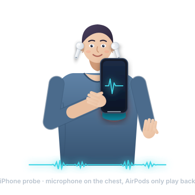
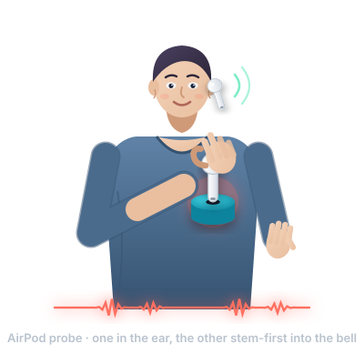
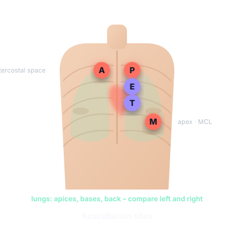
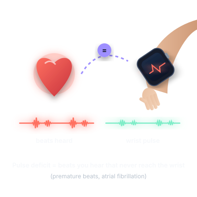

Pilot validation study protocol
Ausculta – smartphone and earbud auscultation with rhythm and breath-sound analysis. Method design: Ján Šikuta, MD, PhD · version 0.1 · 6 October 2026 · download PDF (Slovak)
1Aims and hypotheses
Primary aim
Agreement of auscultation-derived heart rate (Ausculta) with reference ECG/pulse oximeter: mean difference and 95 % limits of agreement (Bland–Altman) at rest. Hypothesis: |bias| < 3/min, LoA ±8/min for artifact-free signal.
Secondary aims
(a) Sensitivity/specificity of premature-beat detection vs ECG; (b) agreement of rhythm classes (regular / with ectopy / irregularly irregular) with ECG; (c) agreement of respiratory rate with observer counting; (d) agreement of adventitious sounds (crackles/wheezes/rhonchi) with an experienced auscultating physician; (e) pulse deficit Ausculta vs Apple Watch vs manual apical–radial comparison.
Exploratory
Quality differences between probes (iPhone vs AirPods H2 vs old AirPods HFP) and bells (cap, syringe, palm); effect of artifacts on error rates; usability (SUS questionnaire).
2Design and participants
Design: prospective, single-arm method-comparison (diagnostic) agreement study; each participant is their own control (simultaneous Ausculta + reference measurement).
Pilot: 30 volunteers (adults, informed consent), purposively ≥ 10 with known arrhythmia/premature beats (cardiology clinic) and ≥ 10 with chronic lung disease (asthma/COPD/fibrosis), the rest healthy.
Exclusion: implanted pacemaker with unknown mode (rhythm aims only), skin lesions at the auscultation site, BMI > 40 (weak signal – exploratory yes, primary analysis no).
Ethics: non-interventional, no risk; approval by the institutional ethics committee, anonymised IDs (P-001…), no names in recordings or metadata.
3Devices and setup
| Item | Specification | Note |
|---|---|---|
| iPhone | iOS 26, Ausculta ≥ 0.1, silent mode, no case on the bottom edge | same device throughout the study |
| Earbuds A | AirPods Pro 3 (H2) | reference AirPod probe |
| Earbuds B | AirPods 2 (HFP) | “old AirPods” arm |
| Bells | PET cap Ø 30 mm/6 mm hole; 20 ml syringe; palm | randomise order |
| Heart reference | 12-lead ECG or single-lead Holter/KardiaMobile, simultaneously; finger pulse oximeter | time sync: a clap at the start |
| Lung reference | simultaneous blinded auscultation with Littmann Classic III by two physicians; respiratory rate counted for 60 s | disagreement → third rater |
| Apple Watch | Series 9/10/Ultra, Ausculta Watch app | for pulse deficit and ECG context |
4Measurement procedure (≈ 15 min / participant)
Preparation
Seated, 5 min rest, bare chest, quiet room (< 40 dB(A) if possible), attach ECG electrodes / oximeter, Watch on the non-dominant wrist, ANC on for the ear side, AirPods microphone fixed to the probe side.
Synchronisation
Start the ECG recording and recording in Ausculta; one loud clap near the chest = t₀ marker in both signals.
Heart – 4 × 30 s
Apex (M), Heart filter: (1) iPhone probe + cap; (2) AirPods Pro 3 + cap; (3) AirPods 2 + cap; (4) iPhone probe + palm. After each segment save the recording with site and note “S1/S2 clear / unclear”.
Lungs – 2 × 30 s
Left and right posterior bases, Lung filter, iPhone probe + cap, slow deep mouth breathing. Two physicians listen simultaneously with a Littmann and record: vesicular / diminished / bronchial; crackles (fine/coarse, phase); wheezes; rhonchi; prolonged expiration.
Pulse deficit – 60 s
Apex, iPhone probe, Heart filter, Watch measurement started from Ausculta; meanwhile a third person counts the radial pulse for 60 s. Record: Ausculta HR, Ausculta Watch HR, manual radial pulse, ECG HR.
Questionnaire
SUS (10 items) + 3 questions: clarity of the guide, bell comfort, perceived sound quality 1–5.
5Variables and analysis
| Variable | Ausculta | Reference | Statistics |
|---|---|---|---|
| Heart rate | 30 s mean (recording metadata) | ECG R-R mean over the same segment | Bland–Altman, ICC(2,1), Pearson |
| Premature beats | count/min, bigeminy | SVPB/VPB count on ECG | Se, Sp, PPV per beat (±150 ms tolerance), Cohen's κ for bigeminy |
| Rhythm class | regular / with ectopy / respiratory arrhythmia / irregularly irregular | ECG diagnosis | weighted κ, confusion matrix |
| RR variability | CV, RMSSD from S1 | CV, RMSSD from ECG | Bland–Altman |
| Respiratory rate | /min | 60 s count | Bland–Altman |
| Breath character, adventitious sounds | class + counts | two-physician consensus | κ, Se/Sp per segment |
| Pulse deficit | HR Ausculta − HR Watch | HR ECG − radial pulse | Bland–Altman; κ for “deficit ≥ 10” |
| Signal quality | SNR, artifacts (flags) | — | stratification; exclude segments with clipping/handling |
The pilot sample (n = 30, 120 heart segments) is enough to estimate LoA to ±1.5/min and the sensitivity of ectopy detection with a CI of ±15 % if the set contains ≥ 40 premature beats. The pilot will give n for the main study (target κ CI ±0.1).
6Data collection and management
Ausculta stores 16-bit WAV (48 kHz with the iPhone/H2 probe, 16 kHz with HFP) + JSON metadata (time, probe, filter, site, note, indicative results, artifact flags, Watch HR, deficit). Export: Share WAV → anonymised folder P-0xx/ (audio + JSON + ECG export + CRF as CSV). Backups on an encrypted drive; no names; the ID↔person key kept separately by the investigator. The data table (CRF) has one row per segment: id, usek, sonda, zvon, filter, miesto, HR_pulse, HR_ekg, ES_pulse, ES_ekg, rytmus_pulse, rytmus_ekg, RR_pulse, RR_ref, fenomeny_pulse, fenomeny_ref, HR_watch, radial, SNR, artefakty, SUS…
7Calibration and iteration
After the first 10 participants: (1) review segments with HR error > 10/min and find the cause (S2 counted as a beat, weak contact, HFP attenuation); (2) tune thresholds (detector threshold, S1–S2 pairing limit, CV class limits, crackle limits); (3) freeze parameters and evaluate the remaining 20 participants without further changes – otherwise results are optimistically biased. The app version and parameter hash are recorded in the CRF.
8Outputs
Internal
Calibration report, thresholds in code, a list of limitations for the App Store description (“in a pilot of n=30, HR agreement was…” only if the data allow).
Publication
Short communication / poster: „Earbud-and-smartphone auscultation: agreement of rhythm and breath-sound metrics with ECG and expert auscultation – a pilot“. Data (anonymised WAV + annotations) as an open dataset if participants consent – no AirPods-probe dataset exists today.
Next step
If κ for adventitious sounds < 0.4: train a Core ML classifier (ICBHI 2017 + own data) instead of tuning heuristics.
9Procedure illustrations

Segment 1 – iPhone probe

Segments 2–3 – AirPod probe

Site M and bases
